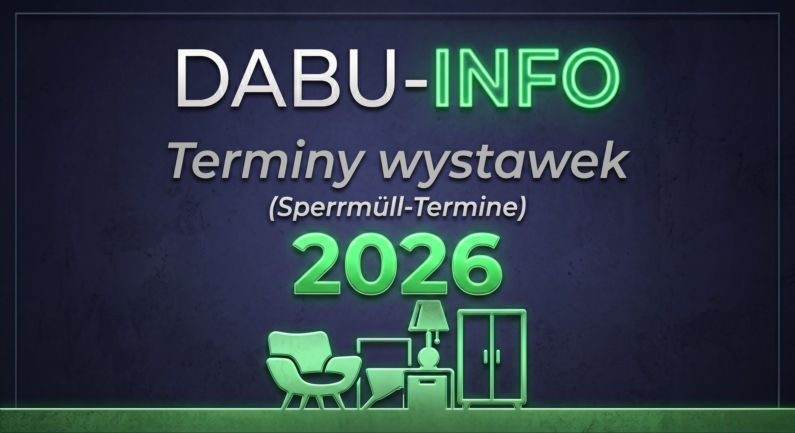

Celem serwisu dabu-info jest dostarczanie najdokładniejszych i stale aktualizowanych planów, rozpisek oraz terminów wystawek odpadów wielkogabarytowych na terenie całych Niemiec. Opierając się na moim 30-letnim doświadczeniu, pomagam zoptymalizować trasy, oszczędzić paliwo i wyeliminować "puste przeloty".
W naszej bazie na 2026 rok znajduje się już ponad 100 starannie wyselekcjonowanych niemieckich rejonów! Nasze rozpiski i szczegółowe plany wywozu pozwolą Ci zawsze dotrzeć na miejsce w optymalnym momencie.
Wybierz tydzień z powyższej listy, aby otworzyć szczegółowy wykaz rejonów. Możesz również sprawdzić dostępność konkretnego miasta w naszym Asystencie (zielona ikona) wpisując jego nazwę.
📌 Legenda skrótów (Spisy i Asystent):🖱️ Kliknij w wybrany dzień lub numer tygodnia (z lewej), aby wygenerować i zamówić rejony na jutro rano!